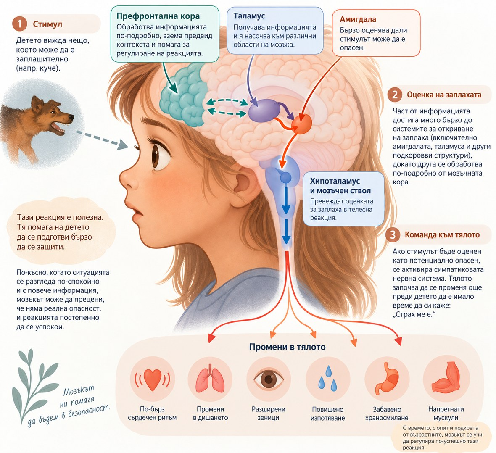

Какво се случва в мозъка и тялото на детето, когато го обземе тревога, и защо разбирането на този механизъм променя начина, по който можем да помогнем.
Наръчник за родители на тревожни деца
Книгата върви по една проста верига, която се повтаря във всяка тема. Първо какво се случва в мозъка и тялото, после в какви форми се проявява тревогата, как изглежда отвън, какво показва практиката и накрая какво може да направи родителят. Първите две глави са готови, останалите предстоят.
Начало
Главите
В края на първата глава ще намерите числата от нея на едно място, след тях започва втората глава, а страниците за проекта и за авторите са в края на книгата.
Глава първа
Преди да говорим какво да правим, си струва да спрем за момент върху нещо просто, но решаващо: какво всъщност се случва вътре в детето, когато го обземе тревога. Щом механизмът стане ясен, препоръките, които следват, спират да звучат като заповеди и започват да изглеждат логични.
Първо, мозъкът
После, тялото
Всеки раздел завършва с изследването зад него, така че всяко твърдение може да бъде проверено. Разгъващите се бележки съдържат допълнителни данни от литературата.
За да разберем тревожността при децата, е полезно първо да разберем как мозъкът разпознава опасността и как се опитва да ни предпази от нея. Една от мозъчните структури, които имат важна роля в този процес, е амигдалата.
Амигдалата е малка група от структури, разположени дълбоко в мозъка, в областта на темпоралните дялове. Името ѝ идва от старогръцката дума за „бадем“ заради формата, която ранните анатоми са оприличили на бадем.
Често амигдалата се нарича „алармената система на мозъка“. Това е полезна метафора, особено когато говорим за тревожност, но не е цялата картина. Амигдалата не е просто „център на страха“. Тя е част от сложна мрежа, чрез която мозъкът открива неща, които са важни за нас, учи се от преживяванията и подготвя организма да реагира. Когато мозъкът разпознае възможна заплаха, тази система може да се задейства много бързо, преди детето да е успяло съзнателно да обмисли ситуацията.
Представете си дете, което се страхува от кучета. На улицата внезапно се появява голямо куче. Детето може моментално да усети сърцебиене, напрежение в тялото и силно желание да се отдалечи. Едва след това може да забележи, че всъщност кучето е на каишка и стопанинът му го държи. Това показва, че тялото понякога започва да реагира на предполагаемата опасност, преди съзнателната ни оценка да е приключила.
Какво се случва през тези първи мигове? Когато мозъкът долови възможна заплаха, информацията започва да се обработва по няколко паралелни пътя. Част от нея достига много бързо до системите, свързани с откриването на заплаха и защитната реакция, докато друга се обработва по-подробно от области на мозъчната кора, които могат да уточнят какво всъщност виждаме и дали то наистина представлява опасност.
Тази първа, бърза обработка е неточна, но има едно голямо предимство, скоростта. Мозъкът не чака да разполага с цялата информация, преди да започне да подготвя организма. При някои видове емоционално значими зрителни сигнали мозъчни реакции могат да бъдат регистрирани само десетки милисекунди след появата им. Това позволява защитната система да започне работа още преди съзнателно да сме разбрали какво точно се случва.
От гледна точка на оцеляването това има смисъл. Ако в тревата пред нас има нещо, което прилича на змия, по-безопасно е първо да отскочим и след това да установим, че всъщност е въже, отколкото да стоим неподвижно, докато мозъкът извърши подробна проверка. (виж Източник 3)
Амигдалата е част от мрежата, която помага този бърз сигнал да се превърне в команда към тялото. Чрез връзките си с хипоталамуса и мозъчния ствол тя участва в задействането на системите, които подготвят организма за действие. Активира се симпатиковата нервна система и тялото започва да се променя още преди детето да е имало време да си каже: „Страх ме е.“ (виж Източник 1 и Източник 2)
Малка структура дълбоко в мозъка, която помага да се поддържа вътрешното равновесие на организма. Регулира процеси като телесната температура, глада, жаждата и съня и свързва нервната система с хормоналната. При стрес или опасност участва в задействането както на бързата автономна реакция на тялото, така и на по-бавната хормонална стресова реакция, която води до отделяне на кортизол.
Област в основата на мозъка, която го свързва с гръбначния мозък и участва в регулирането на жизненоважни автоматични функции като дишането, сърдечната дейност, кръвното налягане, съня и бодърстването. При опасност негови структури участват в бързите телесни реакции, които подготвят организма да се защити.
Част от автономната нервна система, която управлява автоматични процеси в тялото. При опасност бързо мобилизира организма за действие, като ускорява сърдечния ритъм и дишането, повишава бдителността и подпомага освобождаването на адреналин и норадреналин. Тя е важна част от реакцията, позната като „бий се или бягай“.
Сърцето започва да бие по-бързо, за да изпраща повече кръв към мускулите. Дишането се ускорява. Мускулите се напрягат. Зениците могат да се разширят, а вниманието се насочва към онова, което мозъкът е определил като потенциално важно. Организмът мобилизира ресурсите си, така че да може да избяга, да се защити или да остане неподвижен, ако това изглежда като най-безопасната реакция.

От стимула до тялото. Заплахата се оценява за миг, командата стига до тялото още преди мисълта да провери дали опасността е реална, а с времето и подкрепа мозъкът се учи да регулира тази реакция по-успешно.
Точно това се случва и с детето от примера с кучето. То не решава съзнателно: „Сега ще ускоря пулса си и ще напрегна мускулите си.“ Тялото го прави автоматично. Защитната система вече е получила сигнал „Възможна опасност“ и започва подготовката. Малко по-късно идва по-подробната проверка: кучето е на каишка, стопанинът го държи, то не се приближава. Мозъкът получава информация, която може да промени първоначалната оценка.
Но тук се крие една от особеностите на тревожността. Алармата може да бъде включена много по-бързо, отколкото тялото може да бъде убедено, че вече няма нужда от нея.
Затова детето може напълно да разбира думите „Кучето е вързано, няма да те нападне“ и въпреки това сърцето му да продължава да бие силно, краката му да са напрегнати и желанието му да се отдалечи да остава също толкова реално. Тревожността следователно не е само мисъл. Тя е цялостна защитна реакция на мозъка и тялото. И това е една от причините логичното обяснение понякога да не е достатъчно, за да я прекъсне веднага.
При децата има още една важна особеност. Мозъчните системи, които участват в откриването на заплаха, започват да функционират сравнително рано, докато системите, които помагат за регулирането на емоциите, продължават да се развиват през детството и юношеството. (виж Източник 1)
Амигдалата е сред структурите, които започват да участват в реакциите към емоционално значими стимули още много рано в развитието. В същото време връзките ѝ с префронталната кора продължават да се променят и съзряват дълго след това. Можем да си го представим така: алармата започва да работи, преди цялата система за нейното регулиране да е завършила развитието си.
Най-предната част на мозъчната кора. Участва в планирането, вземането на решения, контрола на поведението и регулирането на емоциите. Помага да преценим ситуацията по-обмислено и да овладеем автоматичните си реакции. Развива се продължително през детството и юношеството, заедно с връзките си с други мозъчни структури, включително амигдалата.
Затова страхът при детето може да бъде много непосредствен и телесен. Когато алармената система се задейства, за него е по-трудно да направи онова, което възрастният често очаква: да се отдръпне мислено от преживяването, да прецени спокойно вероятността нещо лошо да се случи и само да успокои реакцията на тялото си.
Това обяснява защо реплики като „Няма от какво да се страхуваш“, „Знаеш, че нищо няма да стане“ или „Просто се успокой“ често имат ограничен ефект. Детето може дори да разбира казаното и въпреки това да продължава да изпитва страх. Разумното обяснение и телесната аларма не се изключват взаимно. Едното може да казва „безопасно е“, докато другото все още сигнализира „опасност“.
Именно тук възрастният има особено важна роля. В ранните години регулирането на силните емоции се случва в значителна степен заедно с друг човек. Детето постепенно изгражда способността да успокоява собствената си нервна система чрез многократния опит някой друг първо да му помага да го прави. Спокойният тон, предвидимото поведение, близостта и увереното присъствие на родителя могат да бъдат сигнали за безопасност. В този смисъл родителят временно изпълнява част от функцията, която детето постепенно ще се научи да изпълнява само.
Преди детето да може добре да регулира себе си, то се регулира с помощта на нас.
Това не означава да премахваме всичко, което го плаши. Ако всеки път отстраняваме източника на тревога, детето може да научи точно обратното, че тревогата означава опасност и че единственият начин да бъде в безопасност е да избяга. Задачата на възрастния е по-фина: да бъде източник на безопасност, без да превръща избягването в източник на безопасност.
Така детето постепенно може да натрупа нов опит: „Страх ме е, но не съм непременно в опасност. Мога да остана. Някой е до мен. Мога да се справя.“ С времето именно такива преживявания помагат на мозъка да изгради по-гъвкави начини за реагиране на тревогата.
В момента на тревога разумните думи рядко стигат до детето. Първо успокоете тялото с тих глас, спокойно лице и близост, а обяснението оставете за после. Докато собствената спирачка на детето узрее, вашето спокойствие временно я замества.
Източници зад този раздел
Източник 1 Neurobiology of Infant Fear and Anxiety PMC, свободен достъп до пълния текст Източник 2 Emotion Processing and the Amygdala: From a Low Road to Many Roads PMC, свободен достъп до пълния текст Източник 3 A Pulvinar to Amygdala Pathway Facilitates Fear Recognition PMC, свободен достъп до пълния текстСигналът за страх пътува към амигдалата по два пътя едновременно. Единият е къс и груб и стига пръв. Другият минава през мислещата част на мозъка и пристига малко по-късно, за да провери спокойно дали заплахата е истинска.
Зеленият път стига до алармата пръв. Мисленето идва след него, за да провери дали заплахата е реална.
При възрастния мислещият мозък бързо усмирява фалшивата тревога. При малкото дете тази връзка още не е дозряла, затова алармата остава задействана по-дълго и по-силно.
Мислещият мозък, наречен префронтален кортекс, изпълнява ролята на спирачка върху алармата. Той е и най-бавно съзряващата част от целия мозък. Връзката между спирачката и алармата укрепва постепенно, през цялото детство.
В зелената зона, годините преди училище, спирачката е още в началото на пътя си. Детето разчита на възрастния да я замести.
Когато детето е в тревога, разумните думи рядко помагат в момента. Помага спокойствието на възрастния до него. Докато собствената му спирачка съзрее, вашето присъствие временно я замества.
Алармата пламва за миг, но след първата искра идва втора, по-бавна вълна. Тялото пуска в кръвта хормон на стреса, наречен кортизол. Ако амигдалата е искрата, кортизолът е горивото, което държи тялото нащрек още дълго след първия сигнал.
В малки дози и за кратко този хормон е полезен. Той разбужда тялото, изостря вниманието и помага на детето да се справи с предизвикателството. Проблемът се появява, когато тревогата се повтаря често и системата остава включена прекалено дълго.
При кратък стрес вълната спада бързо. При постоянна тревога тя се задържа и изтощава детето.
Не всеки стрес вреди. Кратката тревога всъщност помага. Тя разбужда тялото, изостря вниманието и после отминава, а системата се връща в покой. Разликата не е толкова в силата на стреса, а в това колко често се повтаря и има ли кой да утеши детето, докато той премине.
Затова изследователите разграничават три вида стрес. Краткият е като лятна буря, силна, но кратка, след която небето бързо се прояснява. Поносимият е по-тежък, но детето го преживява с опора до себе си и се възстановява. Токсичният е стрес, който се повтаря често, трае дълго и няма кой да смекчи удара. Именно той може да остави трайна следа.
Един и същ товар тежи различно. Спокойният и надежден възрастен е това, което най-често превръща потенциално токсичния стрес в поносим.
Тук се крие и смисълът на думата травма. Травмата не е самото събитие, а следата, която то оставя в тялото и нервната система, когато преживяването е било прекалено силно, за да бъде преработено в момента. Затова понякога тялото помни онова, което умът още не може да разкаже с думи.
Детето не се нуждае от свят без стрес, а от възрастен, който остава до него по време на стреса. Вашето спокойно присъствие е буферът, който често решава дали трудното преживяване ще подмине, или ще остави следа.
Тялото на детето няма само две положения, спокойно и уплашено. То има няколко предавки и превключва между тях според това колко безопасно се чувства. Този начин да гледаме на нервната система идва от поливагалната теория на Стивън Порджес и дава на родителя удобен език.
Когато детето се чувства в безопасност, то е в най-горната предавка, спокойната и социална. Там може да общува, да играе и да учи. Усети ли заплаха, тялото превключва към мобилизация, тоест към бий се или бягай. А ако заплахата изглежда непосилна, системата може да падне в най-ниската предавка, изключване и замиране, при която детето сякаш се отдръпва навътре в себе си.
Детето не избира предавката. Тялото я превключва само, според знаците за безопасност или заплаха, които улавя от средата.
Тук идва и най-практичното понятие, наречено невроцепция. Тялото на детето постоянно проверява средата за знаци дали е безопасно, и прави това под нивото на съзнанието. Гласът, лицето и спокойствието на близкия възрастен са сред най-силните такива знаци.
Затова спокойната нервна система на родителя буквално помага на нервната система на детето да се изкачи обратно към горната предавка. Това не е метафора, а начинът, по който тялото на детето чете света. Наричат го съвместна регулация.
Преди думите идва тонът. Тих глас, спокойно лице и близост често връщат детето в горната предавка по-бързо от всяко обяснение. Първо успокояваме тялото, чак после говорим с ума.
Стои, не отговаря, не помръдва, сякаш се е вкаменило. Лесно е това да се разчете като инат или отказ. Всъщност се случва нещо съвсем друго.
Освен добре познатите реакции „бий се“ и „бягай“, тялото има и трета вродена реакция при страх: замиране. И тя не е пасивна. Замирането е кратка спирачка върху движението. Сърдечният ритъм се забавя, тялото застива, а сетивата се изострят, за да прецени мозъкът какво да прави.
Замирането често идва първо. То не е обратното на действието, а подготовка за него.
Затова когато детето замръзне, то не отказва да ни се подчини. То буквално не може да се раздвижи в този момент. Тялото е натиснало спирачка, която детето още не контролира само.
Сутрин, точно преди детската градина, стомахът започва да боли. Болката е истинска, не е измислена и не е преструвка. За да я разберем, трябва да знаем едно свойство на тялото: червото и мозъкът си разменят сигнали постоянно.
Между тях минава двупосочен нервен път. Именно затова червото понякога наричат „втория мозък“. Когато мозъкът е в тревога, той праща надолу химически сигнал за стрес. Този сигнал ускорява движението на червото и повишава чувствителността му към болка.
Кръгът се затваря. Тревогата боли, а болката подхранва тревогата. Затова цикълът се прекъсва със спокойствие, а не с настояване.
Някои деца още от бебета се дърпат от новото. Пред непознат човек, нова стая или силен шум те замлъкват, вкопчват се в родителя и наблюдават дълго, преди да пристъпят. В изследванията това се нарича вродена предпазливост на темперамента.
Около 15 до 20 на сто от децата идват на света с този по-чувствителен праг на алармата. Това е и един от най-добре описаните ранни признаци за по-висок риск от тревожност по-късно.
Един и същ старт, два различни изхода. Средата и подкрепата накланят везните.
И тук е най-важното. Темпераментът е предразположение, не присъда. Голяма част от предпазливите деца никога не развиват тревожно разстройство. Дали ще го развият, зависи силно от средата и от отклика на възрастните около тях.
Краят на главата
Ето видяното дотук, подредено в една верига. Ранна аларма, която се задейства преди мисълта. Спирачка, която още се изгражда. Хормон, който държи тялото нащрек. Реакции като замиране и болка в корема. И темперамент, който при част от децата е по-чувствителен по рождение.
Всяка от тези брънки води до един и същ извод. В момента на тревога детето не е непослушно. То е залято от биология, която още не може да овладее само.
Оттук идва и най-практичното. Щом собствената спирачка на детето още не е готова, вашето спокойствие става негова временна спирачка. Не думите, не убеждаването, не настояването, а тихото и стабилно присъствие до него.
Разбирането на механизма е важно, но не замества оценка от специалист. Струва си да се консултирате с педиатър или детски психолог, когато:
Ранната подкрепа работи. Търсенето на помощ е грижа, не поражение.
В следващите глави ще видим как изглежда всичко това отвън, при различните форми на тревожност, и ще превърнем разбирането в малки, конкретни стъпки, които детето и родителят изминават заедно.
Първата глава, накратко
Няколко числа, които събират наблюденията от главата. Всяко от тях стои зад разказа в някой от разделите по-горе.
Пълните източници зад тези числа са на съответните им страници в главата.
Глава втора
формите на детската тревожност
В първа глава погледнахме навътре: как алармата в мозъка се включва, как тялото реагира и защо някои деца се раждат по-предпазливи от други. Механизмът обаче е само началото. Един и същ страх може да има много различни лица. При едно дете той е мълчание, при друго сълзи на прага на градината, при трето нощ, която не свършва, а при четвърто въпрос, който се повтаря безкрай: „Ами ако…?“
Тази глава е за тези лица. Всеки раздел носи името на конкретна форма на тревожност, такова, каквото ще чуете в кабинета на специалиста, защото познатото име помага да се ориентираме и да потърсим правилната помощ. Под всяко име обаче стои история на едно дете. Ще срещнете момиче, което говори вкъщи и мълчи в градината, момче, което не пуска ръката на майка си, дете, което се страхува от тъмното, и още няколко малки героя, всеки със своя страх.
Искаме да бъдем честни с вас: тези деца не съществуват точно така. Те са събирателни образи, изградени от описанията в научните изследвания и от това, което родителите разказват най-често. Всичко, което се случва с тях, обаче стъпва на факти, и в края на всеки раздел ще намерите изследванията зад него. Реалните случаи от терапевтичната практика ще срещнете в четвърта глава.
Всеки раздел следва един и същ път. Първо историята на детето, после какво всъщност е това състояние, какво се случва вътре в него, с връзки към първа глава, и накрая как да различим нормалния страх от сигнала, че детето има нужда от повече подкрепа.
И нещо важно, преди да започнем.
Имената в тази глава са инструменти за разбиране, а не етикети за детето. Ако разпознаете своето дете в някоя история, това не е диагноза, а покана да погледнете по-внимателно и, ако е нужно, да потърсите специалист.
А ако го разпознаете в няколко истории наведнъж, не се плашете. Страховете рядко идват поотделно и за това ще говорим в края на главата.
Глава втора
Когато страхът е свързан с хората
Когато страхът има предмет или час
Скритите лица
Всеки раздел ще започва с история на дете и ще завършва с изследванията зад нея. Кликнете върху лицето, което ви интересува.
думите, които остават вътре
Вкъщи Ния не спира да говори. Разказва на котката какво е сънувала, пее под душа и спори с брат си кой тича по-бързо. В градината обаче седи на едно и също място до прозореца. Когато учителката я попита нещо, тя свежда поглед и стиска ръкава на блузката си. Вече трети месец никой в групата не е чувал гласа ѝ.
„Прави се на интересна“, казва някой. „Инат е“, добавя друг. Истината е съвсем различна.
Когато думите не излизат
Една вечер майката на Ния я пита защо не каже на учителката, че иска вода. Ния мисли дълго и отговаря тихо: „Искам, ама не мога.“
Това изречение побира цялото състояние. Ния не отказва да говори. Тя може, и то много добре, но тревогата ѝ пречи.
Селективният мутизъм е тревожно разстройство: детето говори свободно там, където се чувства сигурно, но трайно не успява да проговори в ситуации, в които от него се очаква реч. Затова в градината Ния намира други пътища: сочи чашата, кима, дърпа учителката за ръката. (виж Източник 1)
Ния не е изключение. Селективният мутизъм обикновено започва между 2 и 5 години и засяга приблизително едно на всеки 140 деца под 8 години. (виж Източник 3)
Какво се случва вътре в Ния
Сутрин, щом прекрачи вратата на групата, в тялото на Ния нещо се променя. Раменете ѝ се свиват, лицето ѝ става неподвижно, гласът сякаш изчезва някъде дълбоко. Спомнете си раздела Когато тялото замръзва: когато алармата в мозъка се включи, тялото не винаги бяга или се бори. Понякога просто застива. Мълчанието на Ния може да се разбира точно така, като глас, замръзнал заедно с тялото.
Майка ѝ си спомня, че още като бебе Ния дълго гледала непознатите, преди да им се усмихне, и винаги се криела зад крака ѝ на детската площадка. Това е поведенческата инхибиция, за която говорихме в Роден по-предпазлив. Тя е свързана специално със селективния мутизъм, а деца на 3 до 6 години с по-предпазлив темперамент използват по-малко думи в речеви задачи. (виж Източник 1)
На рождения ден на братовчед си една леля се навежда към Ния и казва весело: „Хайде, кажи здравей! Какво, котката ти изяде езика ли?“ Всички се засмиват. Ния се скрива зад мама и до края на празника не обелва и дума. За нея тази мила покана не е покана, а още един сигнал, че е в центъра на вниманието. Алармата звъни още по-силно. Затова и специалистите съветват възрастните да не притискат детето да говори, защото натискът само засилва тревогата. (виж Източник 1)
Кога мълчанието е сигнал
През септември всички казвали на родителите на Ния, че ще свикне. И били прави да изчакат, защото много деца мълчат в началото на ново място. Дори диагностичните критерии го отчитат: за селективен мутизъм се говори, когато мълчанието продължава поне месец и пречи на ученето или общуването, като първият месец в училище не се брои. (виж Източник 1)
Но минал октомври, после ноември. Ния не си намерила приятелка, не пеела с групата и не можела да каже, че ѝ се ходи до тоалетната. А вкъщи продължавала да разказва дълги, подробни истории. Тази граница, говори у дома, мълчи навън, е ключова. При езиковите затруднения детето има трудности с речта навсякъде, докато при селективния мутизъм всичко зависи от мястото и хората. Затова педиатърът насочил родителите и към логопед, за да се уверят, че речта на Ния се развива нормално. (виж Източник 1)
Като погледнали назад, родителите разпознали и по-ранни знаци. При съвсем малките деца те може да бъдат безизразно лице, силна срамежливост, избухвания, трудности с промени и със съня, както и раздразнително настроение. Всичко това било в Ния много преди градината, просто никой не го бил свързал. (виж Източник 1)
Ния се страхува не само да говори. Тя не обича да я гледат, докато рисува, и се притеснява, когато трябва да застане пред групата. Това е често срещано: обобщение на 22 изследвания с 837 деца показва, че 80% от децата със селективен мутизъм имат и друго тревожно разстройство, най-често социална фобия (69%). (виж Източник 2)
Какво следва за Ния
Ния все още мълчи в градината. Но вече има някой, който разбира защо, и това променя всичко. Селективният мутизъм се повлиява, особено когато помощта дойде рано и родителите са част от нея. Нефармакологичните подходи се смятат за предпочитано първо лечение. (виж Източник 3) Как изглежда такава помощ на практика ще видим в четвърта глава, а какво може да направи семейството на Ния у дома, в пета.
Източници зад този раздел
Източник 1 Understanding Selective Mutism in Very Young Children Renk и съавт. (2025), PMC, свободен достъп до пълния текст Източник 2 Anxiety in Children with Selective Mutism: A Meta-analysis Driessen и съавт. (2020), PMC, свободен достъп до пълния текст Източник 3 A Systematic Review and Meta-analysis of Nonpharmacological Interventions for Children and Adolescents with Selective Mutism Hipolito и съавт. (2023), PMC, свободен достъп до пълния тексткогато мама излиза от стаята
Всяка сутрин пред вратата на градината се разиграва една и съща сцена. Мартин е на пет години и стиска ръката на майка си толкова силно, че пръстите ѝ побеляват. Учителката протяга ръце, майка му го целува, а той се вкопчва в якето ѝ и плаче така, сякаш тя заминава завинаги. Двайсет минути по-късно, казват от градината, вече си играе с кубчетата. Но утре всичко ще започне отначало.
„Разглезен е“, казва баща му. „Прекалено го глезиш“, казва бабата на майка му. Истината е друга.
„Ще дойдеш ли да ме вземеш?“
Вечер, преди да заспи, Мартин пита по няколко пъти: „Ще дойдеш ли утре да ме вземеш? Сигурно ли? Ами ако забравиш?“ Понякога пита и нещо по-тихо: „Ами ако ти се случи нещо?“
Тревожното разстройство при раздяла е прекомерен и неподходящ за възрастта страх от раздяла с най-близките хора, който надхвърля обичайните страхове на ранното детство и не отминава с времето. (виж Източник 3)
Много деца с тази тревожност носят една и съща тайна мисъл: че докато са разделени, на мама или татко ще се случи нещо лошо. Често тревогата излиза и през тялото, с болки в корема или главата точно в утрините на раздяла, и през нощта, с нежелание да заспят сами. (виж Източник 1)
Мартин не е изключение. Това е сред най-честите тревожни разстройства в детството и засяга около 4 до 5 на всеки 100 деца в училищна възраст. (виж Източник 3)
Какво се случва вътре в Мартин
В първа глава, в раздела Спирачката, която още узрява, видяхме, че детският мозък още изгражда своята спирачка и че докато това стане, спокойствието на родителя служи като временна спирачка. За Мартин мама е точно това: присъствието, което казва на алармата в мозъка, че всичко е наред. Когато тя се обърне и тръгне, спирачката изчезва заедно с нея, а алармата прочита раздялата като опасност.
Плачът пред вратата не е театър. Той е тялото, което вика сигурността си обратно.
Спомнете си и Когато тревогата боли в корема. Когато в понеделник сутрин Мартин се оплаква, че го боли коремчето, той не лъже. Болката е истинска, само че идва от тревогата, а не от храната.
Кога страхът от раздяла е сигнал
Страхът от раздяла сам по себе си не е проблем. Той е нормален етап от развитието: обикновено се появява около осмия месец, най-силен е между 10 и 18 месеца и в общия случай отминава до двегодишна възраст. (виж Източник 4) Малко притеснение при тръгване на градина също е съвсем очаквано.
Сигналът идва, когато страхът започне да отнема. В ранното детство сепарационната тревожност се смята за нормално явление, но може да навреди на социалното и емоционалното развитие на детето, когато го кара да избягва места, дейности и преживявания, от които има нужда, за да расте. При по-тежките случаи може да се стигне дори до отказ да ходи на градина или училище. (виж Източник 1)
При Мартин знаците се трупали бавно. Отказвал да остане на рожден ден без майка си. Спрял да ходи на плуване, защото родителите чакат отвън. Идвал в спалнята им всяка нощ. А майка му започнала все по-често да го оставя вкъщи при баба, „само за днес, докато се успокои“.
Сепарационната тревожност е най-често диагностицираното тревожно разстройство в детството. Около половината от децата, насочени за помощ заради тревожност, идват точно заради нея. (виж Източник 1)
Какво следва за Мартин
Мартин все още плаче пред вратата на градината. Но родителите му вече знаят, че зад сълзите не стои глезотия, а страх, и че прекаленото пазене може да го засили. Когато родителските реакции, целящи да предпазят детето от страдание, станат прекомерни, те може да задълбочат зависимостта му и да отнемат усещането, че може да се справи само. (виж Източник 1)
Добрата новина е, че сепарационната тревожност се повлиява добре, особено чрез подходи, съобразени с възрастта на детето и насочени към връзката с родителя. (виж Източник 3) Как изглежда такава помощ ще видим в четвърта глава, а какво може да направи семейството на Мартин у дома, в пета.
Източници зад този раздел
Източник 1 Separation Anxiety Disorder in Youth: Phenomenology, Assessment, and Treatment Ehrenreich, Santucci и Weiner (2008), PMC, свободен достъп до пълния текст Източник 2 Separation Anxiety Symptom Profiles and Parental Accommodation Across Pediatric Anxiety Disorders Phillips, Kendall и съавт. (2020), PMC, свободен достъп до пълния текст Източник 3 Effectiveness of Therapeutic and Educational Interventions for Childhood Separation Anxiety: A Scoping Review Qutishat и съавт. (2026), PMC, свободен достъп до пълния текст Източник 4 Separation Anxiety and Stranger Anxiety Merck Manual, професионално издание, свободен достъппървите дни в градината
През първата седмица Ема ходи на градина заедно с мама. Тичат между кутиите с играчки, Ема хваща учителката за ръка и ѝ показва жълтото камионче, а после се връща при мама и сяда в скута ѝ, само за миг, колкото да провери, че е там. Вечер разказва за камиончето с блеснали очи.
После идва първият ден без мама. На вратата Ема се разплаква и не иска да пусне якето ѝ. Учителката я гушва, а след десетина минути тя вече е до кутията с камиончетата. Вечерта обаче е друга история. Ема е изморена, плаче, защото са ѝ дали синята чаша вместо розовата, и не пуска мама да излезе дори до кухнята.
„Градината не ѝ понася“, казва баба ѝ. „Вземете я, още е малка.“ Истината е друга.
Преход, а не проблем
Първо най-важното: адаптационният синдром не е разстройство. Това е естествената реакция на детето към една от първите големи промени в живота му.
Ново място, нови хора, нов ритъм и дълги часове без мама и татко. Изследователите все по-често описват прехода към детското заведение като процес, а не като единично събитие. За повечето деца той е и нещо хубаво: нови възможности за развитие, учене и радост. (виж Източник 1)
Този процес има своя форма. Той прилича на дъга: леко начало, докато родителите са с детето, после по-трудна фаза, а след около четири седмици повечето малки деца изглеждат приспособени. (виж Източник 1)
Какво се случва вътре в Ема
Спомнете си Бавната вълна на стреса от първа глава. Кортизолът, хормонът на стреса, има свой дневен ритъм: най-висок е сутрин и постепенно спада през деня. (виж Източник 1) В дните в детското заведение обаче при много деца се случва обратното, кортизолът се покачва от средата на сутринта към следобеда. (виж Източник 3)
Изследванията позволяват да проследим тази вълна почти ден по ден. Докато мама е в градината, нивата на кортизола при децата са ниски, а денят е спокоен. През първите две седмици без родители те се покачват, третата седмица изглежда като повратна точка, а след три месеца нивата отново са ниски. (виж Източник 1)
Схема по данните на Drugli и съавт. (2023). Формата е дъга: тялото първо се напряга, после свиква.
С други думи, тялото на Ема наистина преживява тези дни като напрегнати. То просто има нужда от време да се увери, че новото място е безопасно.
А защо първата седмица с мама е толкова лека? Защото мама служи като сигурна база: Ема може да изследва новото място, знаейки къде да се върне. (виж Източник 1) Това е спокойствието на родителя, което в Спирачката, която още узрява нарекохме временна спирачка.
Кога адаптацията е сигнал
Сълзите на вратата, умората вечер и лепкавостта през първите седмици са очаквани. Няма универсален срок, защото децата са различни: при някои покачването на кортизола дори продължава да расте през първите десет седмици, а възрастта на детето влияе на това колко различно е тялото му в градината и у дома. (виж Източник 3)
Все пак някои деца продължават да се затрудняват по-дълго, и тук роля играе и темпераментът, за който говорихме в Роден по-предпазлив. Затова изследователите съветват благополучието на детето през първите седмици да се приема сериозно, а децата, които се затрудняват, да получат ранна подкрепа и от учителите, и от родителите. (виж Източник 1)
Струва си да се вгледате по-внимателно, ако след първите месеци детето не се успокоява, а плачът, отказът и напрежението се засилват, вместо да отслабват. Тогава адаптацията може да крие нещо повече, например сепарационна тревожност, за която говорихме в предишния раздел.
Какво следва за Ема
В края на октомври Ема влиза тичешком в групата и почти забравя да каже „чао“. Вечер все още понякога е изморена, но вече не се вкопчва в мама всеки път, когато тя излезе от стаята.
Бабата греши само в едно: градината не „не ѝ понасяше“. Ема просто имаше нужда от време, от спокойни вечери и от възрастни, които разбират какво се случва. Как да подготвите детето за градината и да го подкрепите през първите седмици, ще видим в пета глава.
Източници зад този раздел
Източник 1 Do Toddlers’ Levels of Cortisol and the Perceptions of Parents and Professional Caregivers Tell the Same Story about Transition from Home to Childcare? Drugli и съавт. (2023), Frontiers in Psychology, свободен достъп до пълния текст Източник 2 Toddlers’ Stress during Transition to Childcare Nystad и съавт. (2021), European Early Childhood Education Research Journal, свободен достъп до пълния текст Източник 3 Examining Change in Cortisol Patterns During the 10-Week Transition to a New Child-Care Setting Bernard и съавт. (2015), PMC, свободен достъп до пълния текстпод погледа на другите
Вкъщи Боян знае коледната песен наизуст. Пее я с татко в колата, пее я във ваната, пее я на котката, докато тя не избяга. На репетицията в градината обаче застава на последния ред, забил поглед в пода, бузите му пламват и устните му не помръдват. Сутринта на тържеството го боли коремчето. Когато учителката го извиква да каже стихотворението си, той се скрива зад гърба на съседа си.
И не е само сцената. В кафенето Боян шепне на мама: „Ти кажи какво искам.“ На площадката гледа дълго как другите деца играят, но не отива при тях. А когато леля му го попита какъв ще става, като порасне, забива лице в рамото на татко.
„Срамежлив е, ще му мине“, казват всички. Понякога са прави. Понякога не съвсем.
Страхът от чуждите очи
Социалната тревожност е страх или притеснение, че ще бъдеш оценен негативно, докато общуваш с другите или докато правиш нещо пред тях. Когато този страх е траен, прекомерен и пречи съществено на ежедневието, говорим за социално тревожно разстройство. (виж Източник 1) То често води до избягване на ситуациите, в които детето може да бъде видяно, чуто или оценено. (виж Източник 3)
Боян не е изключение. Социалното тревожно разстройство е сред най-честите психични затруднения при децата и юношите, като през всяка година засяга между 2 и 5 на всеки 100 от тях. (виж Източник 3)
Какво се случва вътре в Боян
Защо страхът от чуждата оценка се появява точно сега, около петата година? Защото приблизително на тази възраст децата започват да се виждат през очите на другите: да разбират, че хората около тях имат мисли и мнения, включително за тях самите. (виж Източник 1) Това е голяма стъпка в развитието. Но тя отваря и нова врата за тревогата, защото вече има какво да се обърка пред публика.
Спомнете си Алармата в мозъка. За Боян десет чифта очи, вперени в него, звучат точно като опасност. Алармата се включва, бузите пламват, гласът изчезва. А ако си спомняте Роден по-предпазлив, няма да се изненадате, че Боян е бил от бебетата, които дълго гледат непознатите, преди да им се усмихнат. Постоянно високата предпазливост в детството е познат рисков фактор за социална тревожност по-късно. (виж Източник 2)
Срамежливостта не е просто желание да избягаш. В нея има вътрешен конфликт: детето се притеснява от оценката, но същевременно иска да остане и да направи добро впечатление. (виж Източник 1) Боян иска да пее. Точно затова му е толкова трудно.
Кога срамежливостта е сигнал
Срамежливостта сама по себе си не е проблем. Хората, които смятат себе си за срамежливи, са постоянно много повече от тези със социално тревожно разстройство. Да си срамежлив не означава непременно да си социално тревожен. (виж Източник 1) Много деца стоят на последния ред на първото си тържество, а на второто вече махат на мама от първия.
Струва си да се вгледате по-внимателно, когато страхът не отминава, а се разширява: когато детето спира да играе с други деца, отказва рождени дни, не може да помоли за помощ, дори когато има нужда, и когато коремчето го боли все по-често преди ситуации, в които ще бъде забелязано. Тогава срамежливостта може да е прераснала в нещо повече.
Когато мама поръчва вместо Боян в кафенето, тя го прави от обич. Но изследване, проследило 176 деца от бебешка възраст до юношеството, показва нещо важно. Постоянно предпазливите деца развиват по-силна социална тревожност като юноши, когато майката им е силно контролираща. Когато контролът е нисък, високата предпазливост не е значимо свързана със социалната тревожност по-късно. (виж Източник 2) Темпераментът не е присъда. Начинът, по който отговаряме на него, накланя везните.
Какво следва за Боян
На коледното тържество Боян застава на втория ред, до най-добрия си приятел. Не пее, но пляска с ръце в такт и в края на песента поглежда към мама със свенлива усмивка. Вкъщи, в колата, пее цялата песен от начало до край.
Никой не го накара да излезе отпред. Никой и не го остави да се скрие изцяло. Точно в тази среда, между натиска и прекаленото пазене, ще търсим пътя в пета глава, а как изглежда помощта от специалист, ще видим в четвърта.
Източници зад този раздел
Източник 1 Social Anxiety Symptoms in Young Children: Investigating the Interplay of Theory of Mind and Expressions of Shyness Colonnesi и съавт. (2017), PMC, свободен достъп до пълния текст Източник 2 Maternal Over-Control Moderates the Association Between Early Childhood Behavioral Inhibition and Adolescent Social Anxiety Symptoms Lewis-Morrarty и съавт. (2012), PMC, свободен достъп до пълния текст Източник 3 Emotion Regulation in Children and Adolescents with Social Anxiety Disorder: Differences in Strategy Use and Repertoire Compared to Specific Phobias and Healthy Controls Ikas и съавт. (2026), PMC, свободен достъп до пълния тексткучето, тъмното и гръмотевицата
Лора е на шест години и до миналата пролет обичаше разходките в парка. Един следобед малкото кученце на съседите се затича към нея, въртейки опашка. Лора изпищя и се покатери по татко си като котенце по дърво. Кученцето само искаше да си играе.
Оттогава парковете са се смалили. Щом зърне куче, дори на другия край на улицата, Лора стиска ръката на мама и настоява да пресекат. Лае ли някъде, тя замръзва на място. Не иска да ходи у баба, защото баба има стар и много кротък пес. А миналата седмица отказа рождения ден на приятелката си, защото там „може да има куче“.
„Хайде, погали го, виж колко е мъничко“, казват възрастните. „Преувеличава“, мислят някои. Истината е, че страхът на Лора е много по-голям от кучето.
Страх, по-голям от кучето
Специфичната фобия е силен и траен страх от нещо конкретно, животно, тъмнина, гръмотевица, игла, височина, който продължава повече от шест месеца и е придружен от силни телесни реакции и от избягване или голямо страдание. (виж Източник 1) Лора не просто не обича кучетата. Тялото ѝ реагира така, сякаш животът ѝ е в опасност, и цялото ѝ ежедневие започва да се пренарежда около това да не срещне куче.
Лора не е изключение. Специфичните фобии се срещат при около 5 на всеки 100 деца, а сред децата, насочени за помощ, до 10 на всеки 100. (виж Източник 1)
Какво се случва вътре в Лора
Мама е обяснила на Лора десет пъти, че кученцето е мъничко и добро. И Лора го знае. Защо тогава не помага? Спомнете си Двата пътя на страха: алармата в мозъка получава сигнала по бърз, пряк път и задейства тялото, преди мисленето изобщо да е успяло да се намеси. Думите стигат до Лора по бавния път. Когато пристигнат, сърцето вече бие лудо. А когато чуе лай и замръзне на място, това е реакцията, която познаваме от Когато тялото замръзва.
Има и още нещо. Всеки път, когато Лора пресече улицата, за да избегне куче, тревогата ѝ веднага спада. Мозъкът записва: избягването работи. Но така Лора никога не получава шанс да научи, че кучето всъщност не е опасно, и страхът остава непокътнат, а понякога и расте. Точно затова помощта при фобиите стъпва на постепенната, безопасна среща със страха, а не на убеждаването. (виж Източник 1)
Откъде идва страхът
Лора никога не е била ухапана. Но мама се страхува от кучета, откакто се помни. Когато по улицата мине голямо куче, тя неволно стиска ръката на Лора и затаява дъх.
Децата могат да се научат да се страхуват, просто като гледат как някой друг се страхува.
В експеримент изследователи показват на деца непознати животни заедно със снимки на изплашени лица. Страхът на децата от тези животни се покачва във всички посоки: в мислите им, в желанието им да стоят далеч и дори в ритъма на сърцето им. Промените в мислите и поведението се запазват поне месец след експеримента. (виж Източник 3) Децата наблюдават лицата ни и така научават кое е опасно. Никоя мама не иска да предаде страха си. Но е важно да знаем, че това може да се случи, за да можем да го поправим.
Кога страхът е сигнал
Детските страхове сами по себе си са нормални. Системата на страха узрява още в началото на живота и затова нормалните страхове се появяват от много ранна възраст. (виж Източник 2) Обикновено те следват предвидим ход и отминават толкова бързо, колкото са се появили. Само при малцинство от децата страхът остава и започва да пречи. (виж Източник 3)
Голямо изследване с 2512 деца и юноши дава на родителите една много ясна мярка. Повечето страхове от конкретни неща са нормални, когато са леки. Но всички те стават знак за проблем, когато са всеобхватни. (виж Източник 2) Въпросът не е дали детето се страхува от кучета. Въпросът е колко от живота му е завладял този страх.
Схема по данните на Laporte и съавт. (2017). Повечето страхове са нормални, докато са леки.
При Лора страхът вече е пресякъл тази граница: не ходи в парка, не ходи у баба, отказва рождени дни. Специфичните фобии често се оформят към 9 до 10-годишна възраст, но диапазонът е широк и зависи от вида на страха. (виж Източник 1) Затова не е нужно да чакате. Колкото по-рано страхът срещне спокойна подкрепа, толкова по-малко място ще успее да заеме.
Какво следва за Лора
Мама и татко решават да спрат да пресичат улицата при всяко куче. Вместо това една събота сядат с Лора на пейка в парка, достатъчно далеч, и просто гледат как кучетата тичат. Следващата събота сядат по-близо. Мама ѝ разказва, че като малка се е уплашила от едно куче и оттогава се стряска, но че кучетата обикновено са добри. Лора слуша внимателно.
До лятото тя още не гали кучета. Но минава покрай тях, без да пуска ръката на татко, а веднъж дори пита как се казва кучето на баба. Как изглежда професионалната помощ при фобиите ще видим в четвърта глава, а как стъпка по стъпка да подкрепите детето у дома, в пета.
Източници зад този раздел
Източник 1 Intensive Treatment of Specific Phobias in Children and Adolescents Davis, Ollendick и Öst (2009), PMC, свободен достъп до пълния текст Източник 2 Specific and Social Fears in Children and Adolescents: Separating Normative Fears from Problem Indicators and Phobias Laporte и съавт. (2017), PMC, свободен достъп до пълния текст Източник 3 Effect of Vicarious Fear Learning on Children’s Heart Rate Responses and Attentional Bias for Novel Animals Reynolds, Field и Askew (2014), PMC, свободен достъп до пълния текст Източник 4 Preventing the Development of Observationally Learnt Fears in Children by Devaluing the Model’s Negative Response Reynolds, Field и Askew (2015), PMC, свободен достъп до пълния тексткогато нощта е най-дълга
Мира е на четири години и вечер не иска лампата да се гаси. „Само малката, с луната“, моли тя, и мама я оставя да свети. Мира заспива бързо. Но около единайсет часа къщата се разтърсва от писък.
Когато мама влиза в стаята, Мира седи в леглото с широко отворени очи, мокра от пот, дишането ѝ е учестено и тя крещи, сякаш вижда нещо ужасно. Мама я прегръща, но Мира я отблъсква, сякаш не я познава. Мама вика името ѝ, пали голямата лампа, опитва да я събуди. Нищо не помага. След петнайсетина минути, които ѝ се струват цяла вечност, Мира просто се отпуска и заспива отново. На сутринта не помни абсолютно нищо.
Седмица по-късно се случва нещо друго. В пет сутринта Мира идва тичешком в спалнята, трепери и разказва на пресекулки за вълк, който я гонел през гората. Тя се сгушва между мама и татко и помни всичко до най-малката подробност. Мама и татко се чудят: това същото ли е?
Две различни нощи
Не, не е. Въпреки че отвън изглеждат сходно, кошмарите и нощните ужаси са почти противоположни.
Кошмарът е страшен сън. Той се появява в съня със сънищата, детето се събужда напълно, помни какво е сънувало и търси утеха. (виж Източник 2) Кошмарите са много чести в детството: срещат се при 10 до 50 на всеки 100 деца. (виж Източник 2)
Нощните ужаси (pavor nocturnus) са нещо съвсем различно. Те са често нарушение на съня в предучилищна възраст, при което детето внезапно се „събужда“ в ужас, но всъщност остава в преходно състояние между сън и будност. Обикновено идват в първата третина на нощта, от дълбокия сън без сънища. Детето може да пищи и да се мята, без да осъзнава къде е, сърцето му бие бързо, дишането е учестено и то се поти. (виж Източник 1) Нощните ужаси засягат около 6 на всеки 100 деца. (виж Източник 2)
Схема по Van Horn и Street и Singh и съавт. Двете неща изглеждат сходно отвън, но са почти противоположни отвътре.
Какво се случва вътре в Мира
При нощните ужаси тялото на Мира прави нещо, което вече познаваме от Трите предавки на тялото: включва пълна тревога, с ускорено сърце, учестено дишане и пот. Само че го прави посред дълбок сън. Алармата в мозъка звъни, но частта, която би могла да разбере какво се случва и да приеме утехата на мама, още спи. Затова Мира не реагира на думи, на прегръдки, нито на опитите да я събудят. (виж Източник 1) Тя не е изплашена от нещо, което вижда. Тя изобщо не е там.
Кошмарът с вълка е друга история. Там Мира наистина сънува, а страхът в съня е достатъчно силен, за да я събуди напълно. Когато дойде в спалнята, тя е будна, знае къде е и има нужда от точно това, което получава: близост и спокойствие.
При кошмара детето се нуждае от вас, за да се успокои. При нощния ужас детето всъщност не е будно, за да ви усети. И двете са истински, но изискват различни реакции.
Кога нощта е сигнал
Добрата новина идва първа: повечето детски парасомнии, включително нощните ужаси и кошмарите, са доброкачествени и децата ги надрастват. Затова в повечето случаи най-полезни са успокояването и информираността на родителите, без медицинска намеса. (виж Източник 2) Прогнозата при нощните ужаси е добра, повечето деца ги надрастват до десетата си година, а те не увеличават риска от епилепсия. (виж Източник 1)
Кошмарите заслужават повече внимание, когато станат чести, когато детето започне да се страхува да заспи или когато нощта започне да се отразява на деня му. Изследователите предупреждават, че кошмарите може да са рисков фактор или симптом на различни психологически затруднения, включително тревожност. (виж Източник 3) Ако сънищата се въртят около една и съща тревога, от раздялата до кучето от предишния раздел, може би страхът просто продължава работата си и нощем.
При нощните ужаси потърсете педиатър, ако епизодите са много чести, ако детето става и се движи така, че може да се нарани, или ако нещо в поведението му ви тревожи.
Какво следва за Мира
Следващия път, когато Мира изпищява около единайсет, мама не пали голямата лампа и не вика името ѝ. Сяда до леглото, следи Мира да не падне и тихо чака. След десетина минути всичко свършва. На сутринта Мира закусва весело, а мама вече знае, че това не е страх, който дъщеря ѝ носи, а буря, която минава през съня ѝ.
А за вълка двете измислят нов край: той се оказва изгубено вълче, което Мира завежда при майка му. Мира рисува картинката и я закача над леглото, до малката лампа с луната. Как да превърнете вечерта в спокойно време и как да говорите с детето за страховете му преди сън, ще видим в пета глава.
Източници зад този раздел
Източник 1 Night Terrors Van Horn и Street, StatPearls, NCBI Bookshelf, свободен достъп до пълния текст Източник 2 Parasomnias: A Comprehensive Review Singh и съавт. (2018), PMC, свободен достъп до пълния текст Източник 3 Psychosocial Treatments for Nightmares in Adults and Children: A Systematic Review Gill и съавт. (2023), PMC, свободен достъп до пълния текст„ами ако…“
Тео е на седем години и задава много въпроси. Но не като другите деца, които питат защо небето е синьо. Въпросите на Тео започват винаги по един и същ начин. „Ами ако закъснеем за училище?“ „Ами ако утре вали и не можем да отидем при баба?“ „Ами ако татко катастрофира по пътя?“ „Ами ако госпожата ме изпита, а аз забравя?“
Вечер проверява раницата си три пъти. Пита мама колко е часът, после пак. Преди екскурзията с класа не спа почти цяла нощ, а сутринта го болеше главата. Мама и татко отговарят търпеливо на всеки въпрос: „Всичко ще е наред.“ Тео се успокоява за минута. После идва следващото „ами ако“.
„Малък старец“, казва дядо му с усмивка. „Прекалено мисли“, въздиша учителката. Но Тео не избира да мисли така. Мислите сами идват при него.
Когато тревогата няма един адрес
Децата с генерализирано тревожно разстройство изпитват прекомерна тревога, която трудно контролират, и то за много различни неща: да не закъснеят, как се справят в училище, приятелствата си. Понякога се тревожат и дали на близките им няма да се случи нещо, но за разлика от сепарационната тревожност това не е в центъра на страховете им. Колкото повече са темите на тревогата, толкова по-вероятна е тази диагноза. (виж Източник 1)
Спомнете си Мартин от Тревожно разстройство при раздяла: неговият страх имаше един адрес, мама. Страхът на Тео няма адрес. Той просто се мести от една тема на следващата.
При генерализираната тревожност тревогата не живее на едно място. Колкото повече теми обхваща, толкова по-вероятно е да не е просто характер.
Какво се случва вътре в Тео
При Лора алармата се включваше, щом види куче. При Тео няма куче. Алармата в мозъка се включва от собствените му мисли за нещо, което още не се е случило и вероятно никога няма да се случи. Но тялото не прави разлика: главата боли, коремът се свива, сънят не идва. Не е случайно, че децата с тревожност толкова често се появяват при педиатъра с телесни оплаквания. (виж Източник 1) Помните ли Когато тревогата боли в корема?
Защо тогава Тео се тревожи толкова? Защото за него неизвестното е непоносимо. Изследователите описват как децата могат да приемат от средата си няколко скрити послания: че светът не е безопасен, че несигурността е нетърпима, че силните чувства трябва да се избягват и че тревогата помага да се справиш с неизвестното. (виж Източник 2) Ако вярваш в последното, да спреш да се тревожиш изглежда почти опасно. Тревогата се превръща в опит да контролираш бъдещето.
Когато питаме „Защо се тревожиш за глупости?“, пропускаме, че за Тео тревогата не е глупост. Тя е единственият начин, който познава, да се подготви за неизвестното.
Капанът на успокояването
„Всичко ще е наред.“ Колко пъти на ден го казват мама и татко? Десет? Двайсет? Всеки път Тео се успокоява за малко, и точно затова идва отново. Отговорът облекчава тревогата веднага, но не учи Тео, че може да понесе неизвестното сам.
Изследователите наричат това, както видяхме и при Мартин, приспособяване: начините, по които семейството се нагажда към тревогата на детето. Проучванията свързват приспособяването с това тревожността при децата да се задържа. (виж Източник 3) Постоянното успокояване е една от най-честите му форми, и една от най-трудните за забелязване, защото изглежда просто като любов.
Кога тревогата е сигнал
Всички деца се тревожат понякога, преди контролно, преди първия ден на лагер, когато някой в семейството е болен. Това е нормално и дори полезно. Сигналът идва, когато тревогите са много, когато обхващат все повече теми, когато детето не може да ги спре, дори да иска, и когато те започнат да отнемат съня, играта и радостта му.
Важно е тази тревога да не се пренебрегва с надеждата, че „ще порасне и ще му мине“. Оставени без помощ, тревожните разстройства при децата често продължават и се задълбочават. (виж Източник 1)
Какво следва за Тео
Мама и татко забелязват, че отговарят на един и същ въпрос по десет пъти на ден. Решават да опитат нещо различно. Когато Тео пита за пети път дали ще закъснеят, мама спокойно казва: „Виждам, че се тревожиш. Вече ти отговорих, а аз вярвам, че ще се справиш с това чувство.“ Първите дни са трудни. Тео се ядосва, пита отново, плаче. Но после въпросите намаляват.
Тео не спира да се тревожи изведнъж. Но за първи път открива, че „ами ако“ може да остане без отговор, и светът не се срутва. Как точно родителите могат да намалят приспособяването, без детето да се почувства изоставено, ще видим в пета глава.
Източници зад този раздел
Източник 1 The Burden of Anxiety Disorders in Pediatric Medical Settings: Prevalence, Phenomenology, and a Research Agenda Ramsawh, Chavira и Stein (2010), PMC, свободен достъп до пълния текст Източник 2 Environmental Transmission of Generalized Anxiety Disorder from Parents to Children: Worries, Experiential Avoidance, and Intolerance of Uncertainty Aktar и съавт. (2017), PMC, свободен достъп до пълния текст Източник 3 Parent-Based Treatment as Efficacious as Cognitive Behavioral Therapy for Childhood Anxiety: A Randomized Noninferiority Study of Supportive Parenting for Anxious Childhood Emotions Lebowitz и съавт. (2020), PMC, свободен достъп до пълния тексткогато стомахът командва
Миналата зима Дария, която е на осем години, прекара два дни със стомашен вирус. Беше гадно, но мина. Само че нещо остана.
Сега Дария помирисва млякото, преди да го сипе, и проверява датата на всяко кисело мляко. Мие ръцете си толкова често, че кожата ѝ се напука. В училищния стол яде само хляб, защото „не знае кой е готвил“. Отказа екскурзията с автобус, защото „в автобуса на хората им става лошо“. А когато едно момче в класа повърна, Дария плака, докато не дойдоха да я вземат.
Всяко свиване на стомаха я кара да пита: „Ще ми стане ли лошо? Сигурна ли си?“ „Много е капризна с храната“, казва баба ѝ. Истината е, че Дария не е капризна. Тя се страхува.
Страхът, който живее в стомаха
Еметофобията е специфична фобия от повръщане: преувеличена, ирационална реакция към възможността да повърнеш, която надхвърля обичайното за възрастта неприятно чувство и може значително да затрудни живота. (виж Източник 1) Тя е роднина на страха на Лора от кучета, която срещнахме в Специфични фобии, само че „кучето“ тук е вътре в собственото тяло.
Децата с еметофобия често избягват всичко, което може да ги накара да повърнат или да видят как някой друг повръща: болни хора, някои превозни средства, въртележки, болници. (виж Източник 1) Появяват се и множество предпазни ритуали: проверка на срока на годност, често миене на ръцете, следене на собственото здраве и на здравето на другите, препичане на храната. (виж Източник 2) Еметофобията може да започне още в детството, като средната възраст на поява в различни проучвания е около 9 до 10 години. (виж Източник 1)
Какво се случва вътре в Дария
Спомнете си Когато тревогата боли в корема: червото и мозъкът непрекъснато си разменят сигнали, а тревогата може да свие стомаха и да го направи по-чувствителен. За повечето деца това е просто неприятно. За Дария е капан. Тревогата свива стомаха ѝ, стомахът ѝ изпраща сигнал за гадене, а Дария чете този сигнал като доказателство, че всеки момент ще повърне. Страхът расте, стомахът се свива още повече.
Тревогата сама по себе си може да свие стомаха. А свитият стомах изглежда като доказателство, че страхът е прав.
Добре дошли в омагьосания кръг. И точно затова успокояването „Нищо ти няма“ не помага: за Дария стомахът ѝ казва точно обратното. А Алармата в мозъка вярва на стомаха повече, отколкото на мама.
Кога страхът е сигнал
Никой не обича да повръща. Отвращението и лекото притеснение, когато някой наоколо е болен, са нормални. Сигналът идва, когато страхът започне да пренарежда живота: когато детето избягва храни, места, пътувания и хора, когато ритуалите за предпазване заемат все повече време и когато страхът започне да ограничава яденето.
Последното е особено важно. Някои деца с еметофобия започват да ограничават храната си от страх да не повърнат, което може да доведе до намаляване на теглото. (виж Източник 2) При децата страхът от повръщане може да бъде симптом на няколко различни състояния, от специфичната фобия до хранителните разстройства и обсесивно-компулсивното разстройство, затова правилната диагноза изисква специалист. (виж Източник 3) Ако детето ви яде все по-малко или все по-еднообразно, не чакайте.
Какво следва за Дария
Родителите на Дария спират да ѝ отговарят за двайсети път дали ще ѝ стане лошо и я водят при детски психолог. Там тя научава нещо, което никой не ѝ е казвал: че гаденето от тревога е истинско, но не означава, че непременно ще повърне, и че стомахът понякога лъже.
Бавно, по едно стъпало на седмица, в менюто ѝ се връщат храните, от които се страхува. До пролетта тя обядва в училищния стол. Все още помирисва млякото, но вече не проверява датата три пъти. Как изглежда такава помощ отблизо ще видим в четвърта глава, а как да отговаряте на въпросите „ами ако ми стане лошо“, в пета.
Източници зад този раздел
Източник 1 I Think I’m Going to be Sick: An Eight-Year-Old Boy with Emetophobia and Secondary Food Restriction Journal of the Canadian Academy of Child and Adolescent Psychiatry (2017), PMC, свободен достъп до пълния текст Източник 2 Relationships between Emetophobia Symptomatology, Fear of Food, and Body Mass Index Meule, Schuchardt и Kolar (2026), Discover Psychology, свободен достъп до пълния текст Източник 3 Fear of Vomiting and Low Body Weight in Two Pediatric Patients: Diagnostic Challenges Journal of the Canadian Academy of Child and Adolescent Psychiatry (2017), PMC, свободен достъп до пълния тексткогато чинията плаши
На рождения ден на братовчед си Никола, който е на шест години, се задави с парче месо. Всичко продължи само няколко секунди. Татко го потупа по гърба, парчето излезе, Никола се разплака, а после всички се засмяха облекчено. За възрастните историята свърши там.
За Никола не. Оттогава той не докосва месо. После спря да яде ябълки, после хляб с коричка. Сега яде супа, пюре, кисело мляко и банани. Дъвче всяка хапка дълго, отпива вода след всяка лъжица и често пита: „Няма ли да ми заседне?“ В градината обедът стои недокоснат. Вечерята вкъщи се превърна в битка, която завършва със сълзи от двете страни на масата.
„Капризен е“, казва дядо му. „Ако огладнее, ще яде.“ Но Никола не е капризен. Той се страхува, и гладът не е по-силен от страха.
Повече от придирчивост
Избягващото/ограничаващо разстройство на хранителния прием, познато и със съкращението ARFID, е трайна трудност с храненето: детето яде ограничен кръг от храни, избягва цели групи храни и изпитва силни негативни емоции около яденето и масата. То засяга главно деца, но може да се срещне и при по-големи. (виж Източник 2)
Важното е какво липсва. Детето с ARFID не иска да отслабне и не се тревожи за тялото си. (виж Източник 1) Това го отличава ясно от хранителните разстройства, които обикновено си представяме. Никола не мисли за теглото си. Той мисли как да оцелее следващата хапка.
Какво се случва вътре в Никола
ARFID може да има различни двигатели, а при част от децата един от тях е страхът от неприятните последици от яденето. Тази форма обикновено се появява внезапно, след травмиращ случай с неприятен край: болка, гадене, задавяне, повръщане или болезнена медицинска процедура. (виж Източник 1) Точно като при Никола: една случка, и храната се превръща в заплаха.
Схема по Fonseca и съавт. (2024). Трите пътя често се припокриват, но при Никола водещ е страхът.
Спомнете си Алармата в мозъка. Изследователите смятат, че при ARFID участват системите, които обработват страха и неприятното. (виж Източник 1) Алармата на Никола е запомнила месото като опасност, и сега звъни при всяка хапка, която прилича на него. Всяка избегната храна носи облекчение, и точно това облекчение учи мозъка, че избягването работи, както видяхме при Лора в Специфични фобии.
Когато на масата цари напрежение, молби и уговорки, алармата на детето звъни още преди първата хапка. Колкото по-голям е натискът, толкова по-опасна изглежда чинията.
Кога придирчивостта е сигнал
Много малки деца са придирчиви с храната, и това е нормален етап от развитието. Сигналът идва, когато кръгът от храни не се разширява, а се свива; когато детето избягва храненето с други деца и роднини; когато масата се превръща в източник на страх; и когато храненето започне да се отразява на растежа и здравето. ARFID може да има сериозни последици за физическото и психичното здраве, включително забавен растеж, недостиг на хранителни вещества и тревожност, а в същото време остава често неразпознато. (виж Източник 2)
Ако храните, които детето приема, стават все по-малко, или имате притеснения за растежа му, не чакайте да „мине“. Потърсете педиатър. Това не е въпрос на възпитание или воля.
Какво следва за Никола
Педиатърът насочва семейството към екип. Родителите на Никола научават нещо, което им се струва парадоксално: че трябва да спрат битките на масата. Никой вече не го уговаря „още една лъжичка“. Вместо това, с помощта на психолог, храните започват да се връщат една по една, от най-меките към по-твърдите, винаги в неговото темпо.
Месото все още е далеч. Но един ден Никола сам посяга към парче мека печена ябълка, дъвче дълго и казва: „Не заседна.“ За родителите му това е най-хубавото изречение от месеци. Как изглежда такава помощ ще видим в четвърта глава, а как да върнете спокойствието на семейната маса, в пета.
Източници зад този раздел
Източник 1 Avoidant Restrictive Food Intake Disorder: Recent Advances in Neurobiology and Treatment Fonseca и съавт. (2024), Journal of Eating Disorders, PMC, свободен достъп до пълния текст Източник 2 A Systematic Review to Manage Avoidant/Restrictive Food Intake Disorders in Pediatric Gastroenterological Practice Cucinotta, Romano и Dipasquale (2023), Healthcare, PMC, свободен достъп до пълния текст Източник 3 Risk Factors for Avoidant/Restrictive Food Intake Disorder in Children: A Systematic Review Систематичен преглед, PMC, свободен достъп до пълния тексткогато лицата се припокриват
Помните ли Ния? Изминала е година. Тя вече е в първи клас и шепне на една-единствена съученичка, с която седи на един чин. Отказва да чете на глас. В неделя вечер я боли коремът, а в понеделник сутрин плаче пред училищната врата, когато мама трябва да си тръгне. Напоследък пита и нещо ново: „Ами ако госпожата ме изпита?“
Майка ѝ прелиства тази книга и се обърква. Ния е в раздела за мутизма. Но и в този за социалната тревожност. И малко в този за раздялата. И в онзи за „ами ако“. „В коя глава всъщност е дъщеря ми?“, пита се тя.
Отговорът е прост и може би успокояващ: в няколко. И това е по-скоро правилото, отколкото изключението.
Когато лицата се срещат
Коморбидност означава, че едно дете има едновременно две или повече състояния. При тревожността това е много често: тревожните разстройства при децата нерядко вървят заедно с други тревожни разстройства, както и с разстройства на настроението или с хиперактивност и дефицит на вниманието. (виж Източник 1) Това се вижда не само сред децата, които стигат до кабинета, а и в общността. (виж Източник 4)
Вече видяхме едно силно доказателство. При Ния, в Селективен мутизъм, научихме, че 80 от всеки 100 деца със селективен мутизъм имат и друго тревожно разстройство, най-често социална фобия. (виж Източник 2) А при Дария и Никола видяхме как страхът от повръщане може да стои едновременно зад еметофобията и зад ограничаването на храната.
Изследователите описват нещо още по-интересно: в детството емоционалните затруднения се срещат заедно не само едновременно, но и последователно, едно след друго. (виж Източник 3) Страхът понякога сменя лицето си, докато детето расте.
Защо лицата се припокриват
Спомнете си първа глава. Под всички девет лица, които срещнахме, работи една и съща система: алармата в мозъка, която се включва твърде лесно, спирачката, която още узрява, и при част от децата темпераментът, роден по-предпазлив. Лицата са различни, защото страхът намира различни поводи: хората, раздялата, кучето, нощта, стомаха, неизвестното. Но корените са общи.
Зелените линии са някои от връзките, които видяхме в главата. Пунктирите водят към общия център: алармата, спирачката и темперамента от първа глава.
Затова изследователите все по-често разглеждат тревожните разстройства, свързаните с тях състояния и депресивните разстройства заедно, под общото име емоционални разстройства. (виж Източник 3)
Имената в тази глава не са кутии, в които детето трябва да се побере. Те са фенери, които осветяват различни страни на един и същ страх.
Какво означава това за вас
Първо, не е нужно да познаете „правилната“ глава. Ако разпознавате детето си в няколко истории, това не означава, че нещата са много по-зле. Означава, че виждате ясно. Оценката кое е водещо и кое съпътстващо е работа за специалиста.
Второ, общите корени носят и добра новина. Съществуват подходи, насочени именно към общите механизми, а не към всяко лице поотделно. Един такъв подход, създаден за деца и техните родители, е тестван при деца на 6 до 12 години с тревожни и депресивни затруднения. Тревожността и депресивните симптоми при тях намаляват, а подобрението се запазва и три месеца по-късно. (виж Източник 3) Спомнете си и Тео: подходът, при който терапевтът работи само с родителите, помага при различни тревожни разстройства, защото промяната в семейството засяга общите корени.
Трето, колкото повече лица виждате, толкова по-основателно е да потърсите помощ, без да чакате. Оставени без подкрепа, тревожните разстройства при децата често продължават с години. (виж Източник 1)
Какво следва за Ния
Майката на Ния спира да търси правилната глава. Вместо това записва всичко, което забелязва, от мълчанието до коремчето в неделя, и го занася на детския психолог. „Това е много полезно“, казва психологът. „Сега виждаме цялото ѝ сърце, а не само едно лице.“
С това завършва галерията на лицата. В следващата глава, „Знаците на повърхността“, ще погледнем как всички тези страхове изглеждат отвън, в тялото, в поведението и в думите на детето.
Източници зад този раздел
Източник 1 The Burden of Anxiety Disorders in Pediatric Medical Settings: Prevalence, Phenomenology, and a Research Agenda Ramsawh, Chavira и Stein (2010), PMC, свободен достъп до пълния текст Източник 2 Anxiety in Children with Selective Mutism: A Meta-analysis Driessen и съавт. (2020), PMC, свободен достъп до пълния текст Източник 3 The Unified Protocol for Transdiagnostic Treatment of Emotional Disorders in Children (UP-C) in Portugal: Feasibility Study Results Caiado и съавт. (2022), PMC, свободен достъп до пълния текст Източник 4 Anxiety and Anxiety Disorders in Children and Adolescents: Developmental Issues and Implications for DSM-V Beesdo, Knappe и Pine (2009), PMC, свободен достъп до пълния текстЗа проекта
Тази книга започва там, където обикновено свършват съветите: с въпроса защо. Защо детето мълчи пред непознати, защо коремчето го боли точно преди градината, защо думите не помагат в момента на страх. Идеята е проста. Когато родителят разбере механизма, съветът спира да звучи като заповед и започва да изглежда логичен.
Всяко твърдение тук стъпва на академичен източник със свободен достъп до пълния текст, а всеки раздел завършва с бутон към статията зад него. Целта не е да замести специалиста, а да върне на родителя спокойствие и разбиране, от които после израстват малките смели стъпки.
Разбирането идва първо. Съветът, който следва от него, се помни по-лесно и се изоставя по-трудно, дори под напрежение.
[Тук ще влезе информацията за стажа: къде се провежда, в рамките на коя програма или организация, кой период обхваща и как този наръчник се вписва в него.]
Авторите
Наръчникът е плод на съвместна работа между автора на текста и клиничния поглед на психолог, който придружава проекта и следи научната му точност.
[Кратка биография в 2 до 3 изречения: с какво се занимавате, какво образование или интерес ви води към темата за детската тревожност и защо създавате тази книга.]
[Кратка биография в 2 до 3 изречения: квалификация, специализация в детска психология или терапия, години опит и с какво допринася за проекта.]
Съдържанието има образователна цел и не замества индивидуалната консултация със специалист.